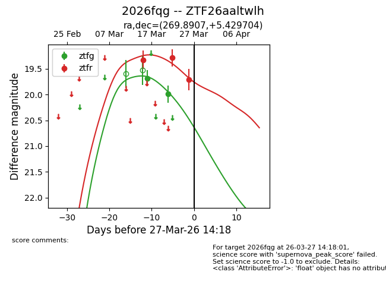
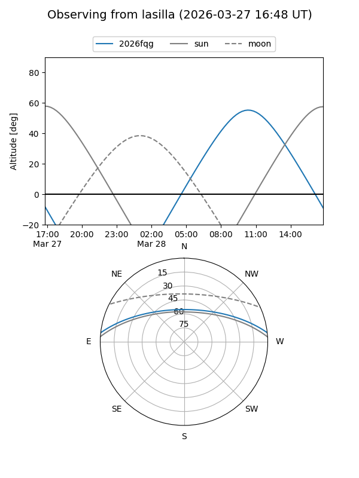
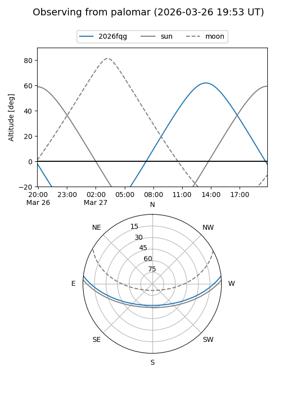
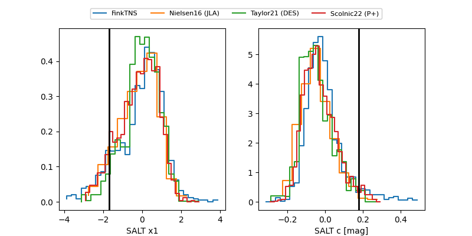

2026fqg
Target 2026fqg at 2026-03-27 14:20
Aliases and brokers:
FINK: link
Lasair: link
ALeRCE: link
TNS: link
YSE: link
alt names
ZTF26aaltwlh (ztf,fink_ztf)
2026fqg (tns,yse)
Coordinates:
equatorial (ra, dec) = 269.8907,+5.42970
equatorial (HMS+DMS) = 17:59:33.78,+05:25:46.93
galactic (l, b) = (31.8892,+14.00352)
Flags:
Photometry:
last ztfg=19.99, ztfr=19.71
2 ztfg, 3 ztfr detections
Lightcurve

Visibility


Additional plots
